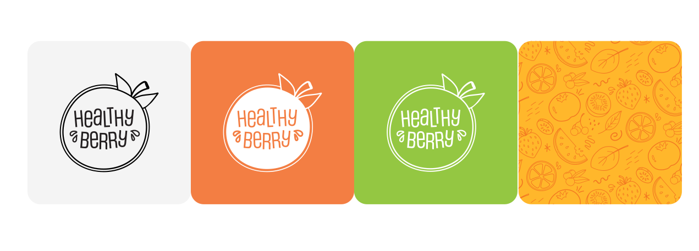
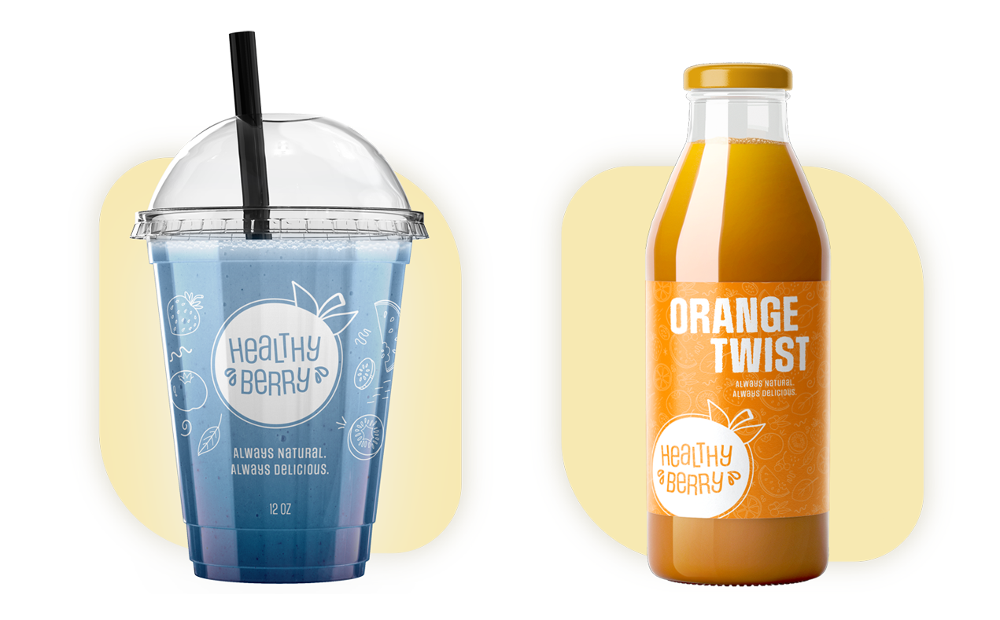
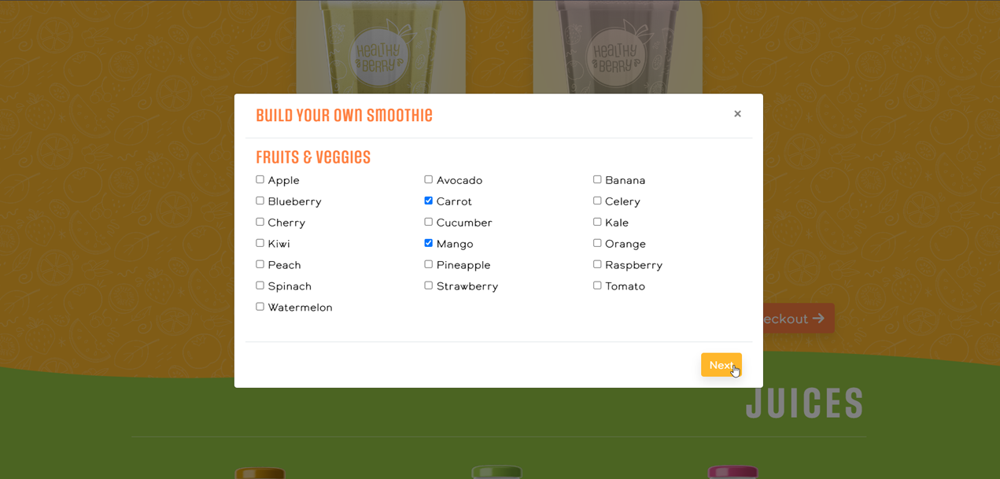
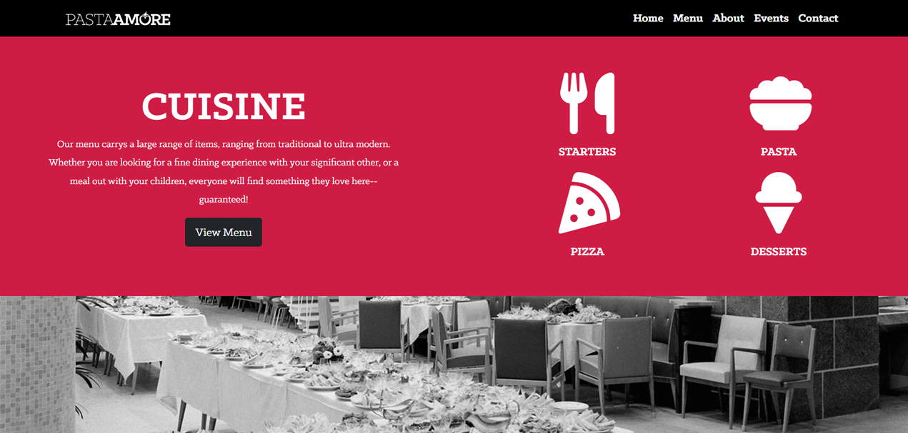
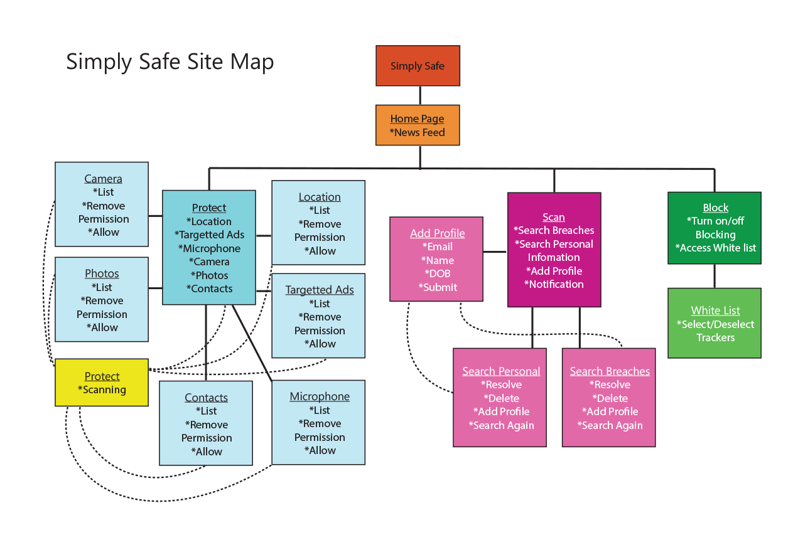
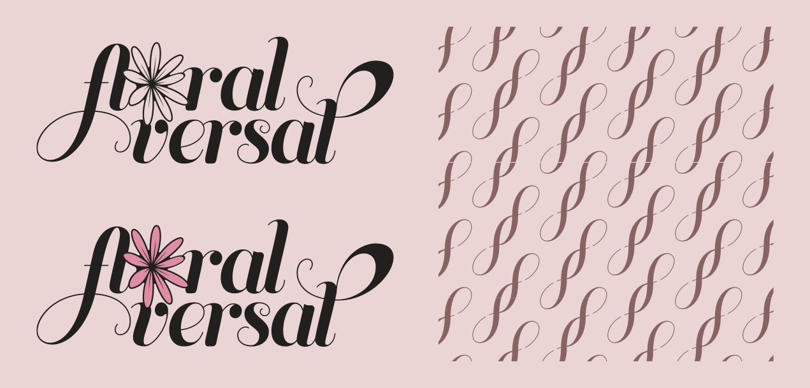

DELIVERABLES: Functional Originally Coded Website, Logo & Brand Design, Packaging Design KEY SKILLS USED: Web Development (HTML, CSS, Bootstap 4), UI/UX design, Brand Design TOOLS USED: Visual Studio Code, Balsamiq, Adobe Illustrator, Adobe Photoshop
Healthy Berry is a project that involved me creating a brand and developing a website for a fictional smoothie bar located in Florida.
The time span for this project was two weeks, with the company’s goal revolving around targeting health-focused
university students.

Keeping the audience in mind, I went with a circular logo motif where I altered the typography to appear slightly skewed.
This helped reflect the visual imagery of ‘motion’ – a theme that is carried throughout this project.
Motion draws parallels with the movement of the smoothie liquid itself and ideas such as fitness and high energy.

I implemented a pattern by digitally drawing fruit by hand to have usable wallpaper and background for packaging design.
Using a transparency background, the white logo allows customers to see their product through the cup, now incorporating the smoothie itself into the color palette.

Being a small business, an app was not reasonably considering their price range, so it was important to ensure the website could be used to place orders instead.
Most of the web design has this in mind – drawing the user’s attention to ordering – while advertising their products.
The website was coded from scratch, excluding javascript codes that had to be implemented for functions such as the multi-page modals.
DELIVERABLES: Functional Originally Coded Website KEY SKILLS USED: Web Development (HTML, CSS, Bootstrap 5), UI/UX design TOOLS USED: Visual Studio Code, Adobe Illustrator, Adobe Photoshop
This project involved me designing and developing a website for an already established brand.
Pasta Amore is an Italian restaurant that celebrates its culture while revitalizing authentic Italian meals with new life.
My approach to this website was to bring in imagery that drew on the vintage and traditional aesthetics of Italian cuisine
but modernize it with the use of color blocking and framing.

Since the restaurant didn’t have an online ordering system, the design was restricted to simply two pages.
This allows users to easily find most information they need on the main page.
To achieve this I had to implement modals for submission forms instead of redirecting to other pages.
However, the menu was isolated on its own page to help increase the company's overall SEO.
This entire website was designed from the ground up using the Bootstrap 5 framework and was written using Visual Studio Code.
Simply Safe was a project that revolved around designing a mock prototype for a fictional privacy-focused app.
This app would allow users to accomplish three things:
1. Quickly alter permissions for apps on their phone.
2. Passively block invasive mobile trackers.
3. Be alerted when their information is part of a data breach.
The logo was designed with a minimal symbol approach, using a blue color scheme to help draw associations to the tech industry and professionalism.

For the UI project, I first drew out a site map to help optimize functionality.
I chose button placements that were easily accessible and divided the pathway up into a simple three-branch path.
At any moment, a user could back out and return to the start of the app and receive an overview of their privacy reports.
This project involved creating a logo, brand, and packaging for a up-and-coming skincare line called Floralversal.
Instead of high-end stores, Floralversal’s products were to be sold at affordable prices at common drug stores.
The company wanted their branding to reflect the ‘universal’ and ‘versatility’ of their lotions, while also drawing attention to the fragrances used.

To counter the competition, the branding had to be much more extravagant compared to the cold and medical appearance of their drugstore counterparts.
Through typographic modification, I was able to encorporate a flower into the lettering and also create a symbol pattern for packaging.
For packaging design, I wanted to find a balance between maximalism and simplicity.
Using floral imagery with three-dimensional textures helps add visual flavor to the frame of the bottles, while never detracting from the information. .
The simplicity comes into play with the body typography, plainly listing product facts about the recommended skin type and ingredients in the center.